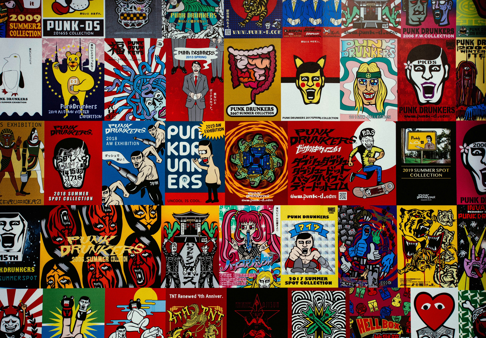

Mijn website gaat over hoe de "retro" stijl als een grote trend terug aan het komen is binnen interieur, posters, kleur en typografie. Je zag afgelopen 10 jaar dat bijvoorbeeld binnen het interieur vooral beige en hout helemaal in was. Nu wordt er steeds meer gebruik gemaakt van de "retro" meubels en ontwerpen, ik ben benieuwd hoe dit komt en wil dit graag onderzoeken en zo goed mogelijk visueel weergeven door middel van deze website.
70s

80s

90s